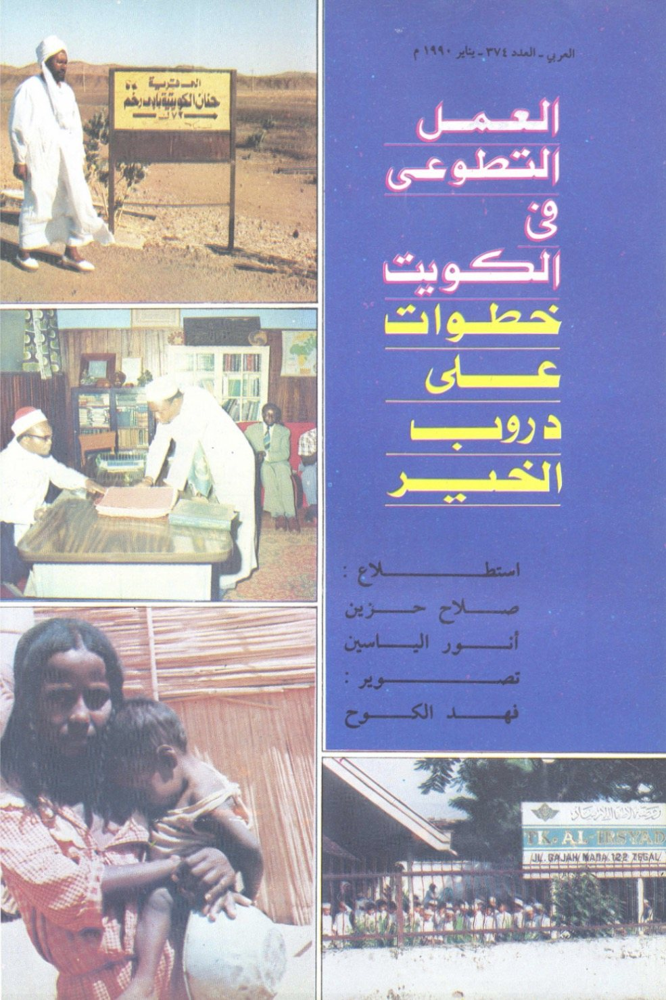
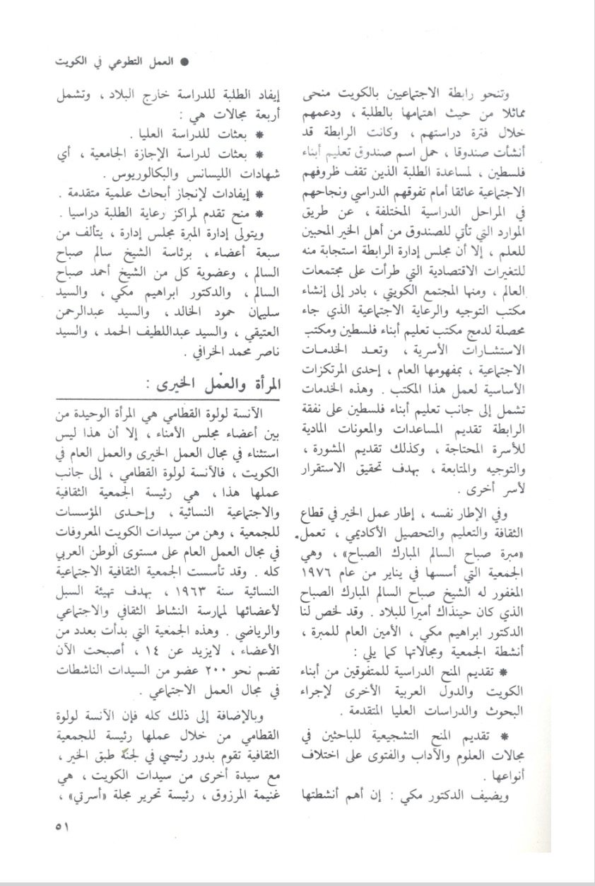
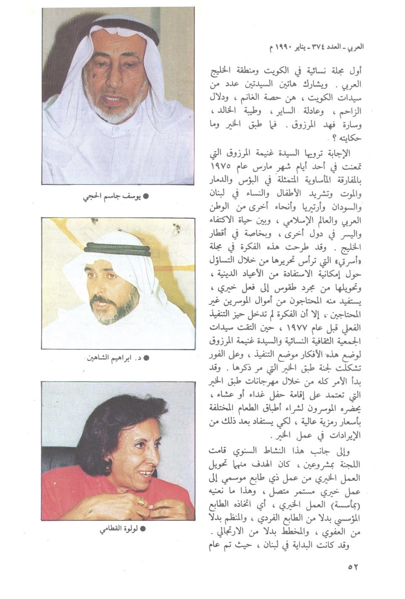

January 1990 · Magazine pages, «Al-Amal Al-Tatawwu’i fil-Kuwait: Khutuwat ‘ala Durub Al-Khair», by Salah Hazin and Anwar Al-Yasin, photographs by Fahd Al-Kouh, Al-Arabi, issue 374, January 1990
Lolwa Al-Qatami, the only woman on the board of trustees of the Sabah Al-Salem Mabarra
What it is
In a report on voluntary work in Kuwait, under «Women and charitable work», Al-Arabi says Miss Lolwa Al-Qatami is the only woman among the members of the board of trustees (of the Sabah Al-Salem Al-Mubarak Mabarra, founded in January 1976). She is president of the Women’s Cultural and Social Society, founded in 1963 with no more than 14 members and by then about 200, and one of Kuwait’s well known women in public work across the Arab world. Through the society she plays a leading part, with Ghanima Al-Marzouq, editor of Usrati magazine, in the Tabaq Al-Khair committee. Her photograph is on page 52.
Why it matters
Contemporary press on Lolwa’s place on the Mabarra board and at the head of the Women’s Cultural and Social Society.
Page copies



Sources
Salah Hazin and Anwar Al-Yasin, «Al-Amal Al-Tatawwu’i fil-Kuwait», Al-Arabi, issue 374, January 1990, pages 51 and 52
How this text was made: Photographed from the printed pages.
Open in the interactive site